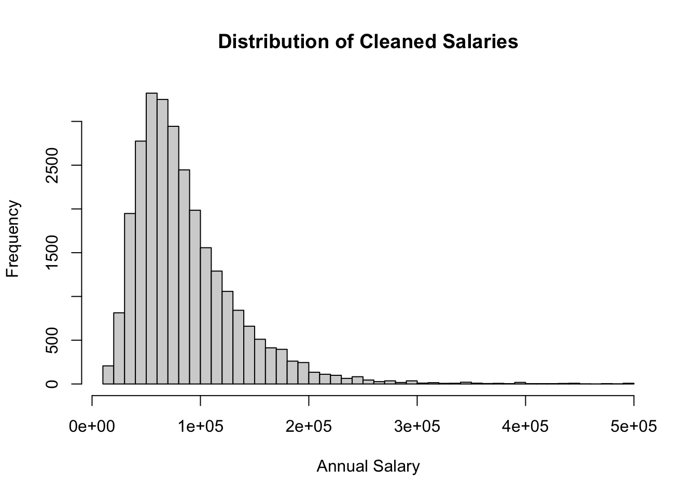

wine <- read.csv("wine.data", header = FALSE)
#wine
wine_name <- read.csv("wine.names",header = FALSE)
#wine_nameHomework 1
Problem Set #1
Problem 1 - Wine Data
names(wine) <- c("class","alcohol_content","malic_acid","ash","alcalanity",
"magnesium","phenols","flavaniods","nonflavanoiids",
"proanthocyanins","color_intensity","hue","od280","proline")
#winetable(wine$class)
1 2 3
59 71 48 The “wine.names” dataset reports the number of instances per class, with class 1 having 59 instances, class 2 having 71 instances, and class 3 having 48 instances. Therefore, the number of wines within each class is correctly calculated here as reported in “wine.names”.
c. (1)
correlation <- cor(wine$alcohol_content, wine$color_intensity)
correlation[1] 0.5463642(2)
library(dplyr)
Attaching package: 'dplyr'The following objects are masked from 'package:stats':
filter, lagThe following objects are masked from 'package:base':
intersect, setdiff, setequal, unioncorrelations <- wine %>% group_by(class) %>%
summarize(correlation=cor(alcohol_content,color_intensity))
highest <- correlations %>% filter(correlation == max(correlation))
lowest <- correlations %>% filter(correlation == min(correlation))
highest# A tibble: 1 × 2
class correlation
<int> <dbl>
1 1 0.408lowest# A tibble: 1 × 2
class correlation
<int> <dbl>
1 2 0.270The class 1 has the highest correlation between alcohol content and color intensity, which is 0.4082913. The class 2 has the lowest, which is 0.2697891.
wine[which.max(wine$color_intensity), "alcohol_content"][1] 14.34(4)
mean(wine$proanthocyanins > wine$ash) * 100[1] 8.426966overall_means <- colMeans(wine[, -1])
class1_means <- colMeans(wine[wine$class == 1, -1])
class2_means <- colMeans(wine[wine$class == 2, -1])
class3_means <- colMeans(wine[wine$class == 3, -1])
means <- rbind(overall_means,class1_means, class2_means,class3_means)
means <- as.data.frame(means)
rownames(means) <- c("Overall", "Class 1", "Class 2", "Class 3")
means alcohol_content malic_acid ash alcalanity magnesium phenols
Overall 13.00062 2.336348 2.366517 19.49494 99.74157 2.295112
Class 1 13.74475 2.010678 2.455593 17.03729 106.33898 2.840169
Class 2 12.27873 1.932676 2.244789 20.23803 94.54930 2.258873
Class 3 13.15375 3.333750 2.437083 21.41667 99.31250 1.678750
flavaniods nonflavanoiids proanthocyanins color_intensity hue
Overall 2.0292697 0.3618539 1.590899 5.058090 0.9574494
Class 1 2.9823729 0.2900000 1.899322 5.528305 1.0620339
Class 2 2.0808451 0.3636620 1.630282 3.086620 1.0562817
Class 3 0.7814583 0.4475000 1.153542 7.396250 0.6827083
od280 proline
Overall 2.611685 746.8933
Class 1 3.157797 1115.7119
Class 2 2.785352 519.5070
Class 3 1.683542 629.8958t.test(wine$phenols[wine$class == 1], wine$phenols[wine$class == 2])
Welch Two Sample t-test
data: wine$phenols[wine$class == 1] and wine$phenols[wine$class == 2]
t = 7.4206, df = 119.14, p-value = 1.889e-11
alternative hypothesis: true difference in means is not equal to 0
95 percent confidence interval:
0.4261870 0.7364055
sample estimates:
mean of x mean of y
2.840169 2.258873 t.test(wine$phenols[wine$class == 1], wine$phenols[wine$class == 3])
Welch Two Sample t-test
data: wine$phenols[wine$class == 1] and wine$phenols[wine$class == 3]
t = 17.12, df = 98.356, p-value < 2.2e-16
alternative hypothesis: true difference in means is not equal to 0
95 percent confidence interval:
1.026801 1.296038
sample estimates:
mean of x mean of y
2.840169 1.678750 t.test(wine$phenols[wine$class == 2], wine$phenols[wine$class == 3])
Welch Two Sample t-test
data: wine$phenols[wine$class == 2] and wine$phenols[wine$class == 3]
t = 7.0125, df = 116.91, p-value = 1.622e-10
alternative hypothesis: true difference in means is not equal to 0
95 percent confidence interval:
0.4162855 0.7439610
sample estimates:
mean of x mean of y
2.258873 1.678750 The t-tests show that there are significant differences in phenol levels between all three class pairs, with very small p-values indicating that the differences in means are highly statistically significant.
Problem 2 - AskAManager.org Data
AAM <- read.csv("AskAManager.csv", header = FALSE)
#AAMnames(AAM) <- c("ID","Timestamp","Age","Industry","Job_Title",
"Job_Title_Context","Annual_Salary","Additional_Compensation",
"Currency","Other_Currency","Income_Context","Country",
"State","City","Years_Professional_Experience_Overall",
"Years_Professional_Experience_Field","Highest_Education",
"Gender","Race")
#AAMnrow(AAM)[1] 28063nrow(AAM[AAM$Currency=="USD",])[1] 23374unique(AAM$Years_Professional_Experience_Field)[1] "How.many.years.of.professional.work.experience.do.you.have.in.your.field."
[2] "5-7 years"
[3] "2 - 4 years"
[4] "21 - 30 years"
[5] "11 - 20 years"
[6] "1 year or less"
[7] "8 - 10 years"
[8] "31 - 40 years"
[9] "41 years or more" unique(AAM$Years_Professional_Experience_Overall)[1] "How.many.years.of.professional.work.experience.do.you.have.overall."
[2] "5-7 years"
[3] "8 - 10 years"
[4] "2 - 4 years"
[5] "21 - 30 years"
[6] "11 - 20 years"
[7] "1 year or less"
[8] "41 years or more"
[9] "31 - 40 years" experience_vector <- c("1 year or less" ,"2 - 4 years", "5-7 years",
"8 - 10 years","11 - 20 years","21 - 30 years",
"31 - 40 years","41 years or more")
AAM_sub=AAM[AAM$Years_Professional_Experience_Overall>=
AAM$Years_Professional_Experience_Field,]
cat("Number of observations before cleaning:", nrow(AAM), "\n")Number of observations before cleaning: 28063 cat("Number of observations after cleaning:", nrow(AAM_sub[AAM_sub$Age>=18,]), "\n")Number of observations after cleaning: 22773 AAM$Annual_Salary <- as.numeric(as.character(AAM$Annual_Salary))Warning: NAs introduced by coercionAAM_cleaned <- AAM[AAM$Annual_Salary >= 12000 & AAM$Annual_Salary <= 500000, ]
hist(AAM_cleaned$Annual_Salary, breaks = 50, main = "Distribution of Cleaned Salaries",
xlab = "Annual Salary")
Because the federal poverty line for an individual is around $12,000 annually in the U.S., I choose 12000 as the low salary threshold. For the high-income threshold decision, I’d go with 50,000, because that way the distribution of salary remains balanced and not overly skewed, making the data easier to interpret.
cat("Number of rows before eliminating extreme salaries:", nrow(AAM), "\n")Number of rows before eliminating extreme salaries: 28063 cat("Number of rows after eliminating extreme salaries:", nrow(AAM_cleaned), "\n")Number of rows after eliminating extreme salaries: 27724 Problem 3 - Palindromic Numbers
isPalindromic <- function(num) {
if (!is.numeric(num) || num <= 0 || floor(num) != num) {
stop("Input should be a positive integer.")
}
reversed_str <- paste(rev(strsplit(as.character(num), "")[[1]]), collapse = "")
reversed_to_num <- as.numeric(reversed_str)
return(list(isPalindromic = (num == reversed_to_num), reversed = reversed_to_num))
}
isPalindromic(728827)$isPalindromic
[1] TRUE
$reversed
[1] 728827isPalindromic(39951)$isPalindromic
[1] FALSE
$reversed
[1] 15993isPalindromic_logic <- function(num) {
reversed_str <- paste(rev(strsplit(as.character(num), "")[[1]]), collapse = "")
return(num == as.numeric(reversed_str))
}
nextPalindrome <- function(num) {
if (!is.numeric(num)|| num <= 0 || floor(num) != num) {
stop("Input should be a positive integer.")
}
next_num <- num + 1
while (!isPalindromic_logic(next_num)) {
next_num <- next_num + 1
}
return(next_num)
}
nextPalindrome(7152)[1] 7227nextPalindrome(765431537)[1] 765434567cat("1.",nextPalindrome(391)," ")1. 393 cat("2.",nextPalindrome(9928)," ")2. 9999 cat("3.",nextPalindrome(19272719)," ")3. 19277291 cat("4.",nextPalindrome(109)," ")4. 111 cat("5.",nextPalindrome(2)," ")5. 3 Link to GitHub repository：